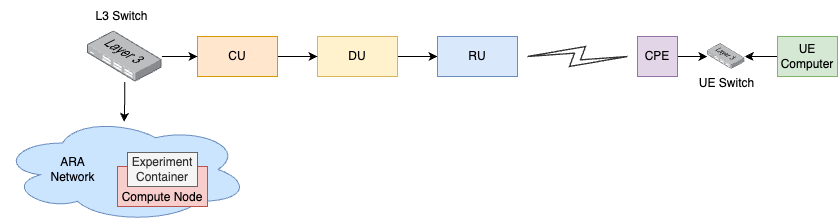

AraRAN Experiments
Experiment 1 - Transmitting, Receiving, and Visualizing Waveforms using UHD and GNURadio
Platform: Universal Software Radio Peripheral.
Resources needed: USRP N320, USRP B210, and a general purpose server.
- Short Description: Transmit and receive samples to a file using
USRP Hardware Driver (UHD) and GNU Radio.
Detailed Description: The experiment makes use of UHD and GNU Radio to transmit signals from the base station, receive, visualize, and save the IQ samples to a file for analysis.
Follow the steps below to create leases and launch containers for this experiment:
Login to the portal
portal.arawireless.orgwith your username and password.Create two reservations using the Project -> Reservations -> Leases tab from the dashboard:
gNB
Site: Sandbox
Resource Type: AraRAN
Device Type: Base Station
UE
Site: Sandbox
Resource Type: AraRAN
Device Type: User Equipment
Create two containers on the respective nodes using the corresponding reservation IDs. For the containers, the Docker images can be used as follows:
gNB
Container Image:
aravisor/container_images:gNodeB
UE
Container Image:
aravisor/container_images:nrUE
(Note that these container images have been equipped with USRP Hardware Driver already)
Once the container is launched, associate a floating IP with the container.
Associate floating IPs with the containers using the Project -> Network -> Floating IPs tab.
The containers can be accessed via the console tab of the respective containers in the Project -> Containers tab from the dashboard or using ssh via the jumpbox server.
In the gNB container, run the following commands to transmit a sample waveform with specific frequency, sampling rate, bandwidth, and gain.
cd /usr/local/lib/uhd/examples ./tx_waveforms --freq 3500e6 --rate 5e6 --gain 0
The output from the tx_waveforms is as follows:
Creating the usrp device with: ...
[INFO] [UHD] linux; GNU C++ version 7.5.0; Boost_106501; UHD_4.0.0.HEAD-0-g90ce6062
[INFO] [MPMD] Initializing 1 device(s) in parallel with args: mgmt_addr=192.168.20.2,type=n3xx,product=n320,serial=32584FD,claimed=False,addr=192.168.20.2
[INFO] [MPM.PeriphManager] init() called with device args `mgmt_addr=192.168.20.2,product=n320,clock_source=gpsdo,time_source=gpsdo'.
[INFO] [MPM.Rhodium-0] init() called with args `mgmt_addr=192.168.20.2,product=n320,clock_source=gpsdo,time_source=gpsdo'
[INFO] [MPM.Rhodium-1] init() called with args `mgmt_addr=192.168.20.2,product=n320,clock_source=gpsdo,time_source=gpsdo'
[INFO] [MPM.Rhodium-0] Re-initializing daughter board. This may take some time.
[INFO] [MPM.Rhodium-0] init() called with args `mgmt_addr=192.168.20.2,product=n320,clock_source=internal,time_source=internal,skip_rfic=None,master_clock_rate=245760000.0,ref_clk_freq=25000000.0'
[INFO] [MPM.Rhodium-0.init.LMK04828] LMK initialized and locked!
[INFO] [MPM.Rhodium-0.DAC37J82] DAC PLL Locked!
[INFO] [MPM.Rhodium-0.AD9695] ADC PLL Locked!
[INFO] [MPM.Rhodium-0.init] JESD204B Link Initialization & Training Complete
[INFO] [MPM.Rhodium-1] Re-initializing daughter board. This may take some time.
[INFO] [MPM.Rhodium-1] init() called with args `mgmt_addr=192.168.20.2,product=n320,clock_source=internal,time_source=internal,skip_rfic=None,master_clock_rate=245760000.0,ref_clk_freq=25000000.0'
[INFO] [MPM.Rhodium-1.init.LMK04828] LMK initialized and locked!
Using Device: Single USRP:
Device: N300-Series Device
Mboard 0: n320
RX Channel: 0
RX DSP: 0
RX Dboard: A
RX Subdev: Rhodium
RX Channel: 1
RX DSP: 1
RX Dboard: B
RX Subdev: Rhodium
TX Channel: 0
TX DSP: 0
TX Dboard: A
TX Subdev: Rhodium
TX Channel: 1
TX DSP: 1
TX Dboard: B
TX Subdev: Rhodium
Setting TX Rate: 1.000000 Msps...
Actual TX Rate: 0.999024 Msps...
Setting TX Freq: 3500.000000 MHz...
Setting TX LO Offset: 0.000000 MHz...
Actual TX Freq: 3500.000000 MHz...
Setting TX Gain: 0.000000 dB...
Actual TX Gain: 0.000000 dB...
[INFO] [MPM.Rhodium-1.DAC37J82] DAC PLL Locked!
[INFO] [MPM.Rhodium-1.AD9695] ADC PLL Locked!
[INFO] [MPM.Rhodium-1.init] JESD204B Link Initialization & Training Complete
[WARNING] [0/Radio#0] Attempting to set tick rate to 0. Skipping.
Setting device timestamp to 0...
Checking TX: all_los: locked ...
Press Ctrl + C to stop streaming...
^C
Done!
To visualize the DFT/FFT of the waveform generated in Step 3, run the following command in the UE container;
cd /usr/local/lib/uhd/examples ./rx_ascii_art_dft --freq 3500e6 --rate 1e6 --gain 40 --ref-lvl -60
The terminal displays DFT/FFT as in the figure below when we run
rx_ascii_art_dft;
{kind=link}
- Note: You can change the properties of the waveform to suit your
preference. Moreover, you can transmit an OFDM signal/waveform such as the one from the OAI nrsoftmodem.
To save the IQ samples to a file for further processing, run the following command in the UE container;
cd /usr/local/lib/uhd/examples ./rx_samples_to_file --freq 3500e6 --rate 1e6 --gain 40 --duration 15 IQ_samples.dat
The output from
rx_samples_to_fileis as follows:Creating the usrp device with: ... [INFO] [UHD] linux; GNU C++ version 7.5.0; Boost_106501; UHD_4.2.0.HEAD-0-g46a70d85 [INFO] [B200] Detected Device: B210 [INFO] [B200] Operating over USB 3. [INFO] [B200] Initialize CODEC control... [INFO] [B200] Initialize Radio control... [INFO] [B200] Performing register loopback test... [INFO] [B200] Register loopback test passed [INFO] [B200] Performing register loopback test... [INFO] [B200] Register loopback test passed [INFO] [B200] Setting master clock rate selection to 'automatic'. [INFO] [B200] Asking for clock rate 16.000000 MHz... [INFO] [B200] Actually got clock rate 16.000000 MHz. Using Device: Single USRP: Device: B-Series Device Mboard 0: B210 RX Channel: 0 RX DSP: 0 RX Dboard: A RX Subdev: FE-RX2 RX Channel: 1 RX DSP: 1 RX Dboard: A RX Subdev: FE-RX1 TX Channel: 0 TX DSP: 0 TX Dboard: A TX Subdev: FE-TX2 TX Channel: 1 TX DSP: 1 TX Dboard: A TX Subdev: FE-TX1 Setting RX Rate: 1.000000 Msps... [INFO] [B200] Asking for clock rate 32.000000 MHz... [INFO] [B200] Actually got clock rate 32.000000 MHz. Actual RX Rate: 1.000000 Msps... Setting RX Freq: 3500.000000 MHz... Setting RX LO Offset: 0.000000 MHz... Actual RX Freq: 3500.000000 MHz... Setting RX Gain: 40.000000 dB... Actual RX Gain: 40.000000 dB... Waiting for "lo_locked": ++++++++++ locked. Press Ctrl + C to stop streaming... ^C Done!Check the size of your IQ file using the command below
$ ls -al IQ_samples.dat -rw-r--r-- 1 root root 25720000 Feb 12 23:11 IQ_samples.dat
Experiment 2: Monitoring Skylark MIMO Wireless link Performance
Platform: Skylark
Resources needed: Central Unit (CU), Distributed Unit (DU), Radio Unit (RU), and a Customer Premises Equipment (CPE)/User Equipment (UE)
- Short Description: The experiment is designed to monitor wireless
link parameters.
Detailed Description: In ARA platform, multiple CPEs are deployed and are already connected to the ARA Skylark Base Station (BS). Using the experiment, we can launch a container equipped with APIs to interact with Skylark CU and measure real-time link utilization and performance-related metrics on the Skylark platform. The figure below shows the detailed network and experient diagram.
Detailed Steps
Login to the portal
portal.arawireless.orgwith your username and password.Create a reservations using the Project -> Reservations -> Leases tab from the dashboard with the following attributes:
Site: Data Center
Resource Type: Compute Node
Device Type: Compute Node
Launch a container equipped with APIs using the container image
`arasklk/ara-sklk:sklk-api_v0.3`.Associate floating IPs with the containers using the Project -> Network -> Floating IPs tab.
The containers can be accessed via the console tab of the respective containers in the Project -> Containers tab from the dashboard or using ssh via the jumpbox server.
Run the following script in the container to launch the CLI.
./ara-sklk-cli.py
Run the following command to get the number of CPEs connected, SNR, and the average MCS being in effect. The information provides an idea about current system performance.
get_ue_statsType
`help -v`to show all the commands that can be run to extract wireless link data such as SNR, throughput etc. Here are the list of commands that can be run.get_bus_rates Print a table of bus rates get_center_freq Gets center frequency get_config Get current ue's configuration get_connected_ues Returns a list of connected ues get_csi_data Returns csi data get_data_rates Print a table of data rates get_main_stats Returns main statistics get_phy_config Returns phy configuration get_ue_stats Print current ue's statistics